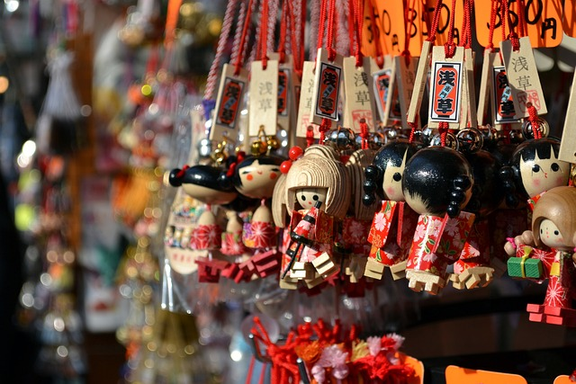
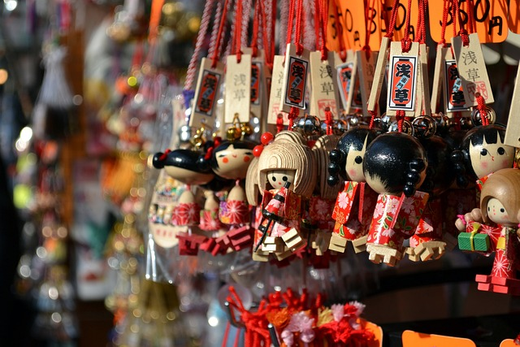
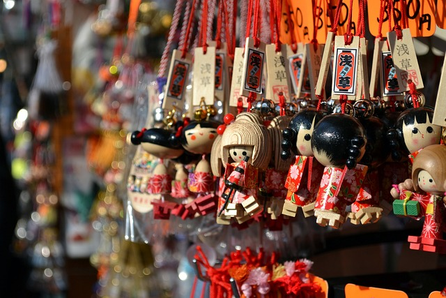

Asakusa is a great place to visit if you're looking for good food and seeing shrines. A famous shirine in Asakusa is the Sensoji shrine. There are also lots of street food and restaurants to try there. It's also a perfect place to look for souvenirs.
 
